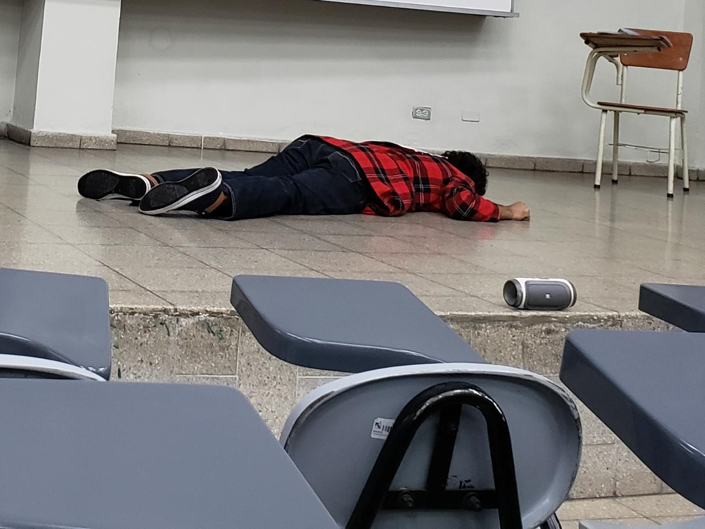
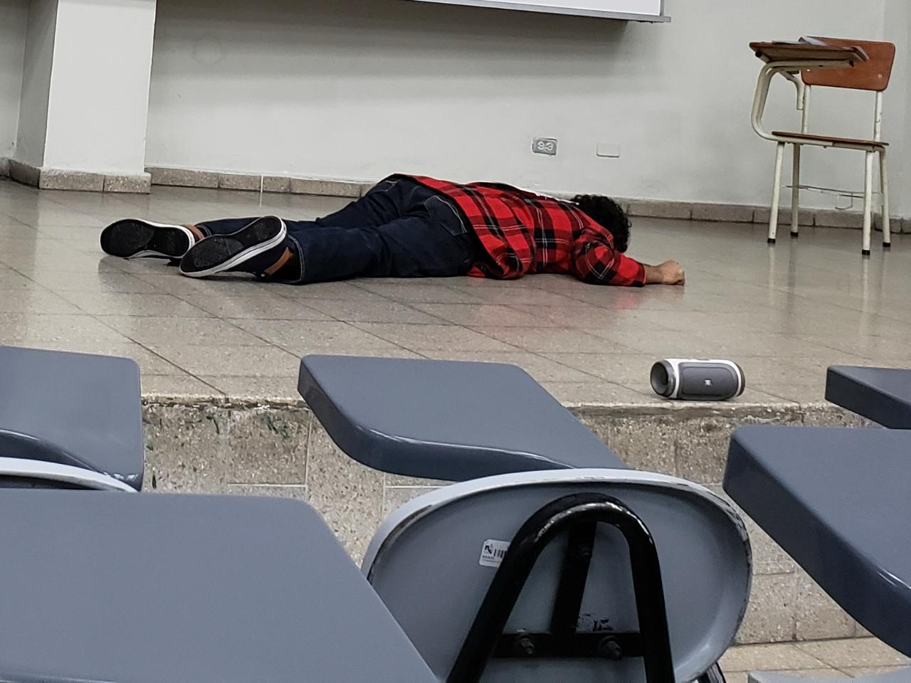

Capítulo 1 - “Begin;”
El dia lunes nos cayo un video a los estudiantes de Administracion de Base de datos de un personaje llamado Ale Rav que amenazo con destruir la UCA,
Luego un audio de otro personaje misterioso nos informo que teniamos que ayudarlo mandandonos un enlace y pidiendonos ayuda para decifrar un acertijo.
Respuesta Acertijo 1
Para resolver el primer acertijo lo que se tuvo que hacer fue:
Hacer una funcion que pasara verificando una lista de numeros, que identificara que todos fueran numeros y que no hubieran letras y que el ocatavo digito fuera un "-"
Luego una funcion que dejara multiplicar el primer dato por 9 y luego el segundo por 8 asi hasta llegar al ultimo numero, luego estas multiplicaciones se sumaban, luego la suma de las multiplicaciones se tenian que sumar con un modulo de 10.
esto nos daba un numero para hacer una resta que restandolo con el numero de verificacion que seria el ultimo numero del DUI tendria que dar 0 y nos daria el DUi verdadero.


 
